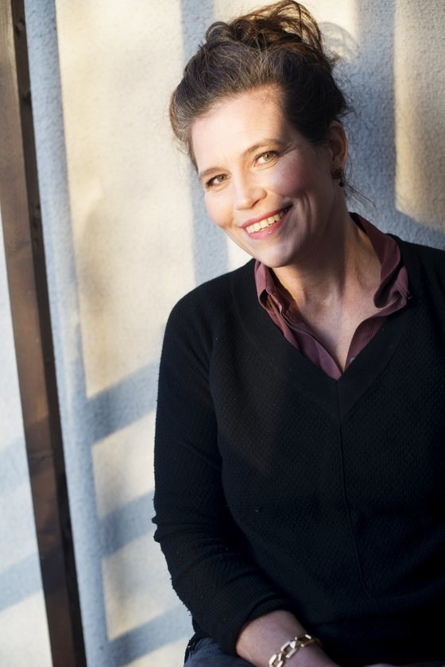

About

Welcome to my website!
I study fertility and family relations and engage in science popularisation and population
policies.
Much of my research and public outreach has focused on the reasons for the unexpected fertility decline, including screen use and digital wellbeing. See my essays The TikTok Baby Bust and "Think about it all the time", our book chapter Fertility desires in the digital era, or the Financial Times interview Are family friendly policies no longer enough?
As Research Professor and Director of the Population Research Institute at Väestöliitto, the Family Federation of Finland, I also supervise the yearly Family Barometers and promote sustainable population development — but what does that even mean? Read our Population Policy Programme.
My demographic report for the Sanna Marin government in 2021 presented guidelines for Finnish population policies in the 2020s, and was followed by "20 steps to support fertility" for the Petteri Orpo government in 2024.
I speak regularly at conferences and for policymakers; see Talks.
Baby fever
I aim to bridge social and biological approaches in the study of human behaviour, resulting in the study of "baby fever", or the strong longing to have a child of one's own. Articles include "All that she wants is another baby?" Longing for children as a fertility incentive of growing importance and Baby longing and men's reproductive motivation. Stephanie Murray wrote a good post on this in The End of Baby Fever: what a strange emerging trend in Finland can teach us about the baby bust.
Contact
Population Research Institute, Väestöliitto, Helsinki, Finland
anna.rotkirch@vaestoliitto.fi
+358 40 776 3086
ORCID 0000-0002-9429-1499